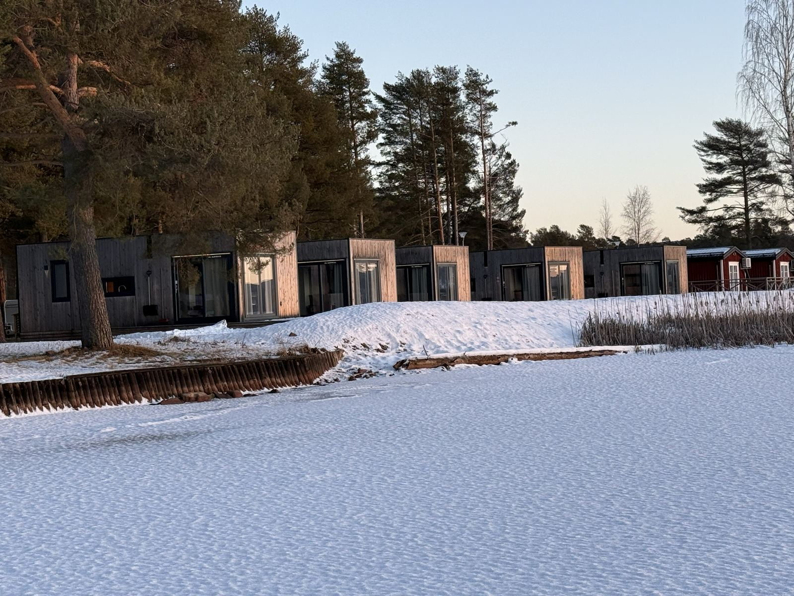

Aankomst
Je komt aan bij de huisjes aan het Orsameer. Tijd om je materiaal klaar te leggen en het ijs alvast te bekijken. Via de online service zie je hoe het ijs en het weer er de komende dagen voor staan.

Een geveegde baan van zo'n 15 kilometer over het Orsameer, en 's avonds je eigen huisje op een steenworp van het ijs.


Een baan van vijftien kilometer, geveegd over een bevroren meer. Verder is er niemand.
Op het Orsameer in Dalarna wordt elke winter een lange baan geveegd. Je schaatst er zelfstandig, op je eigen tempo.
Wat je precies rijdt, staat nooit van tevoren vast. Natuurijs laat zich niet plannen: via onze online service krijg je actuele info over het ijs, alle alternatieve schaatslocaties en weerupdates, zodat je elke dag zelf kiest waar je schaatst.
Dat vraagt wel dat je zelf kunt inschatten of het ijs veilig is.

Je verblijft in huisjes op First Camp Orsa-Dalarna. Geen hotelgang, maar een eigen plek waar je 's avonds bij elkaar zit en 's ochtends zo het ijs op stapt.
De precieze indeling van de huisjes stemmen we af op de grootte van je reisgezelschap. Wil je daar vooraf meer over weten? Neem contact op.


Orsa is standaard een zelfstandige reis: er gaat geen begeleider mee op het ijs, maar tussen 10 januari en 20 februari kun je begeleiding op het ijs bijboeken. De vlucht naar Zweden, het verblijf in de huisjes en het vervoer ter plaatse zijn geregeld. Via onze online service krijg je actuele info over het ijs, alle alternatieve schaatslocaties en weerupdates, en info over alternatieve activiteiten en activiteiten die je kunt bijboeken.
Het pakket zonder begeleiding is ook als gezin te boeken. Er is geen leeftijdsgrens.
De vlucht naar Zweden, de huisjes en het vervoer ter plaatse zijn geregeld.
Je betaalt de hele reissom bij het boeken.
Actuele info over het ijs, alle alternatieve schaatslocaties en weerupdates.
De volgorde ligt vast, de invulling niet. Waar je schaatst, kies je elke dag zelf, aan de hand van het weer en het ijs.

Je komt aan bij de huisjes aan het Orsameer. Tijd om je materiaal klaar te leggen en het ijs alvast te bekijken. Via de online service zie je hoe het ijs en het weer er de komende dagen voor staan.

Rustig beginnen op de geveegde baan, zodat je went aan het natuurijs en aan de schaatsen.

Elke dag kijk je naar het weer en de ijskwaliteit, en kies je waar je heen gaat. Soms is dat de lange baan over het meer, soms wijk je uit naar een van de alternatieve schaatslocaties in de omgeving. Is schaatsen even niet mogelijk, dan krijg je info over alternatieve activiteiten en activiteiten die je kunt bijboeken.

Afhankelijk van je reistijd is er 's ochtends vaak nog ruimte voor een laatste rondje over het meer voordat je vertrekt.
Het exacte aantal dagen hangt af van de reisdatum. Zodra die vaststaat, past het programma zich daarop aan.
Twijfel je of iets erbij zit? Vraag het even, dan weet je het zeker.
Standaard niet: de schaatsreis naar Orsa is een zelfstandige reis, er gaat geen begeleider mee op het ijs. De vlucht, het verblijf in de huisjes en het vervoer ter plaatse zijn geregeld, en via onze online service krijg je actuele info over het ijs, alle alternatieve schaatslocaties en weerupdates. Dat vraagt wel dat je zelf kunt inschatten of het ijs veilig is. Wil je niet alleen het ijs op, dan kun je tussen 10 januari en 20 februari een gids op het ijs bijboeken: €100 per dag voor 1 persoon, + €50 per dag voor elke extra persoon, voor zoveel dagen als je wilt. Begeleide groepsreizen worden nog gepland.
Op het Orsameer in Dalarna wordt elke winter een lange baan geveegd van zo'n 15 kilometer. Wat je precies rijdt, staat nooit van tevoren vast: dat hangt af van het weer en de ijskwaliteit. Via de online service krijg je actuele info over het ijs, alle alternatieve schaatslocaties en weerupdates.
Je verblijft in eigen huisjes op First Camp Orsa-Dalarna, vlak bij het ijs. Geen hotelgang, maar een eigen plek waar je 's avonds bij elkaar zit en 's ochtends zo het ijs op stapt. De precieze indeling van de huisjes stemmen we af op de grootte van je reisgezelschap.
Inbegrepen zijn het verblijf in de huisjes, de vlucht naar Zweden, vervoer ter plaatse, online service met actuele info over het ijs, alle alternatieve schaatslocaties en weerupdates, en info over alternatieve activiteiten en activiteiten die je kunt bijboeken. Niet inbegrepen zijn je eigen schaatsmateriaal en winterkleding, verplichte veiligheidsuitrusting (ijsprikkers en helm) en verzekeringen.
Je hoeft geen wedstrijdschaatser te zijn, maar je moet wel zelfstandig en gecontroleerd kunnen schaatsen. Twijfel je over je niveau, dan denkt Joey vooraf met je mee.
Dat bepaal je zelf: je schaatst zelfstandig en deelt je dagen zelf in. Hoeveel kilometer dat wordt, staat nooit van tevoren vast - dat bepalen het ijs, het weer en de route van die dag.
Orsa is standaard een zelfstandige reis: er gaat geen begeleider mee op het ijs. Dat vraagt wel dat je zelf kunt inschatten of het ijs veilig is. Wil je dat liever niet alleen doen, dan kun je tussen 10 januari en 20 februari begeleiding op het ijs bijboeken. Via de online service krijg je actuele info over het ijs, alle alternatieve schaatslocaties en weerupdates. Wel blijft het natuurijs: goede voorbereiding hoort erbij. Begeleide groepsreizen worden nog gepland. Lees meer over schaatsen in Zweden op natuurijs.
Natuurijs kun je niet garanderen. Via de online service krijg je actuele info over het ijs, alle alternatieve schaatslocaties en weerupdates, zodat je zelf kunt uitwijken naar ander geschikt ijs. Is schaatsen niet mogelijk, dan krijg je info over alternatieve activiteiten en activiteiten die je kunt bijboeken. Lees wat er gebeurt als de ijsomstandigheden veranderen.
Je neemt je eigen schaatsmateriaal mee. Voor natuurijs raden we langlaufschaatsen aan. Daarnaast heb je winterkleding nodig waar je een hele dag in buiten kunt zijn; ijsprikkers en een helm zijn verplicht. Bekijk de paklijst voor een schaatsreis naar Scandinavië.
De prijs begint bij €995 per persoon voor 4 dagen met z'n tweeën. Kies hieronder je aankomst- en je vertrekdag, dan zie je meteen wat jouw periode kost.
Zodra de kalender laadt, kies je hier zelf je periode en boek je direct. Lukt dat niet, mail dan naar schaatsennovakse@outlook.com of app naar +31 6 17467643.
Ook Falun en Finland zijn zelfstandige reizen. Bij Falun kun je, net als bij Orsa, tussen 10 januari en 20 februari begeleiding op het ijs bijboeken. Falun boek je als compleet pakket met vlucht, huurauto en verblijf, en je kiest zelf je aankomstdag. Begeleide groepsreizen worden nog gepland. Op wintersport in Sälen? Dan kun je ook een dag schaatsen op natuurijs.